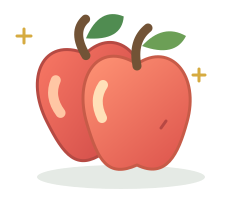
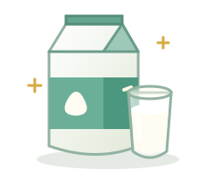

Lan cần máy nghe
Cô nói “Mời cả lớp mở sách”. Ứng dụng giúp Lan xem lại lời cô bằng chữ.
Mỗi bạn có lượt thực hành và phiếu riêng.

Cô nói một câu. Lan muốn đọc lại lời cô. Nam chụp một món đồ để chọn thùng chai hay lon.
Cô nói “Mời cả lớp mở sách”. Ứng dụng giúp Lan xem lại lời cô bằng chữ.
Ứng dụng nhìn ảnh và gợi ý chai hoặc lon. Nam nhìn lại nắp trước khi chọn thùng.
Nếu ảnh bị mờ, em muốn nhìn kỹ chi tiết nào trước khi tin gợi ý?
Đọc rồi chọn cách điền cho mỗi chuyện.
Cô nói “mở sách”, máy lại viết “mở sạch”.
Em nghe lại lời cô để đối chiếu. Với ảnh của Nam, em quan sát nắp và hình dáng đồ vật.
Viết một ví dụ trong học tập và một ví dụ trong đời sống. Mỗi ví dụ nêu ai cần giúp, ứng dụng nào và ứng dụng giúp việc gì.
Đọc lại: bạn có biết ai dùng ứng dụng và dùng để làm gì không? Nếu chưa, em bổ sung vào phiếu.
Hai bạn lần lượt tự cầm chuột. Chọn câu và dự đoán món trước khi mở Google Dịch.



Chọn Anh sang Việt, tự gõ câu. Đọc từ chỉ món ăn rồi quay lại ghi kết quả.
Đối chiếu từ trên Google Dịch với hình em chọn. Sau lượt này, đổi người cầm chuột.
Mỗi bạn tự gắn nhãn một lượt rồi xem máy tự lọc hình.
Mở AI for Oceans ↗Nếu chưa vào được màn hình kết quả, báo thầy cô để được hướng dẫn hoặc xếp lượt thử tiếp.
Chép đúng việc em làm và kết quả em thấy từ hai công cụ. Em có thể quay lại từng hoạt động để ghi tiếp.
Thầy cô ghi nhận riêng lượt dùng máy của mỗi em. Nếu kể miệng, nhờ thầy cô ghi lại lời em.
Sau khi đọc lại, nộp Q1 hoặc Q2 tại mục thầy cô giao trên Azota, hoặc nộp phiếu riêng có tên. Nội dung trên web là bản nháp. Trước khi đổi người dùng máy, sao chép phiếu của em.